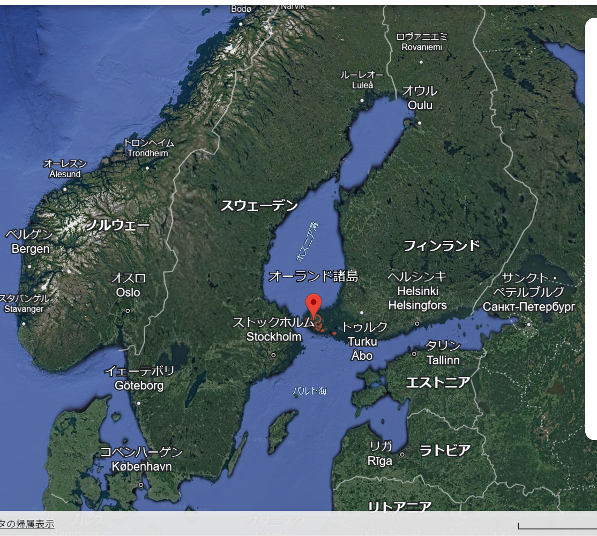
オーランド諸島は、フィンランドとスウェーデンの間
すなわちバルト海、ボスニア湾の入り口の多島海域に位置する
6,500を超える島々からなるフィンランドの自治領。
しかし、住民のほとんどはスウェーデン系であり
公用語はスウェーデン語という少し変わった島。
スポーツが熱く、相手がスウェーデンとなるとより熱い。
スウェーデン語を使うけれど違う、フィンランドに属するがフィンランド語は読めない話せない。でもマインドはフィンランド。
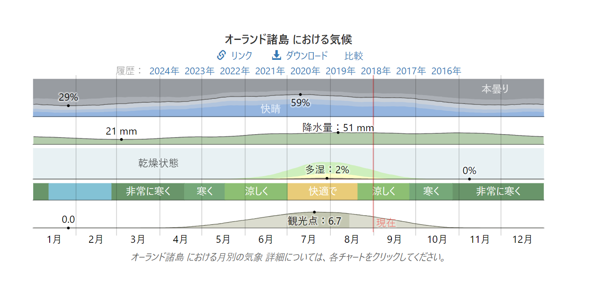
▲オーランド諸島では、夏は短く、快適で、一部曇り、冬は長く、凍えそうに寒く、降雪が多く、ほぼ曇り、年間を通じて風が強くです。
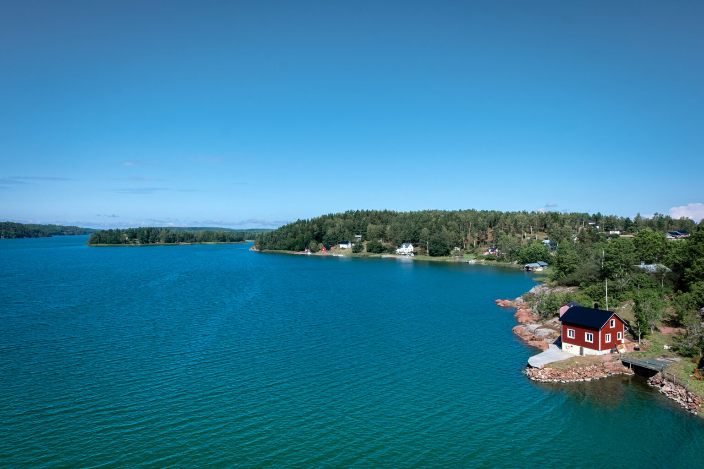
▲気候が穏やかであるため、フィンランド本土よりも豊かな植物が育つ傾向があります。
主に松やモミなどが育ち、島全体で小さな森林を形成しています。
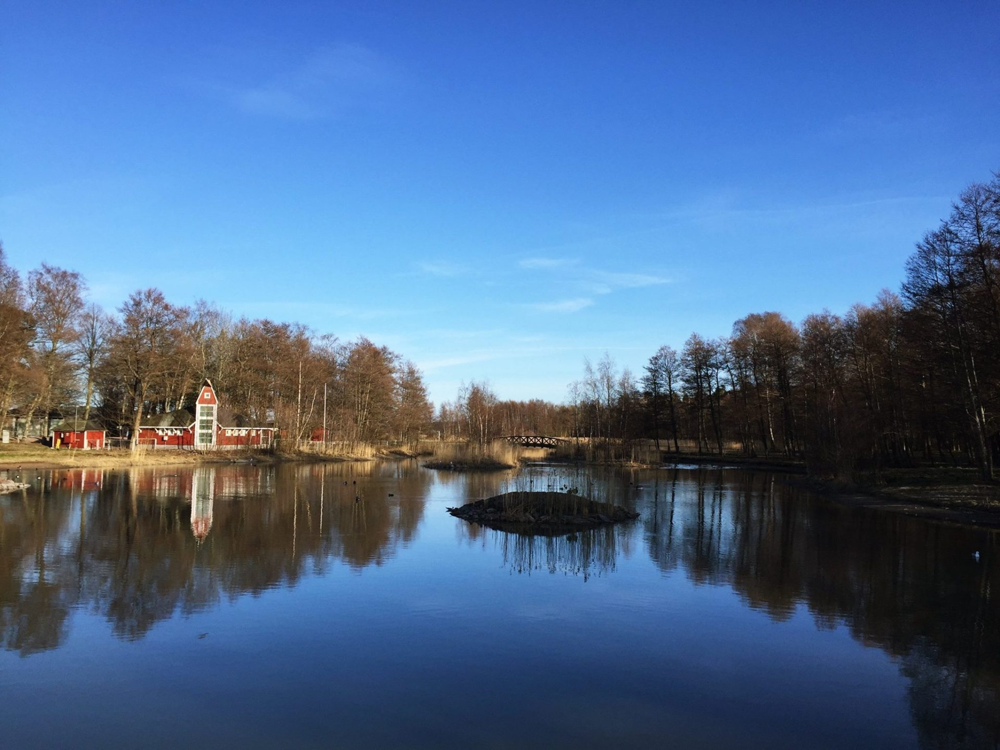
▲夏はフィンランド本土より涼しく冬は本土より暖かいためバカンスに来る人も多いです。
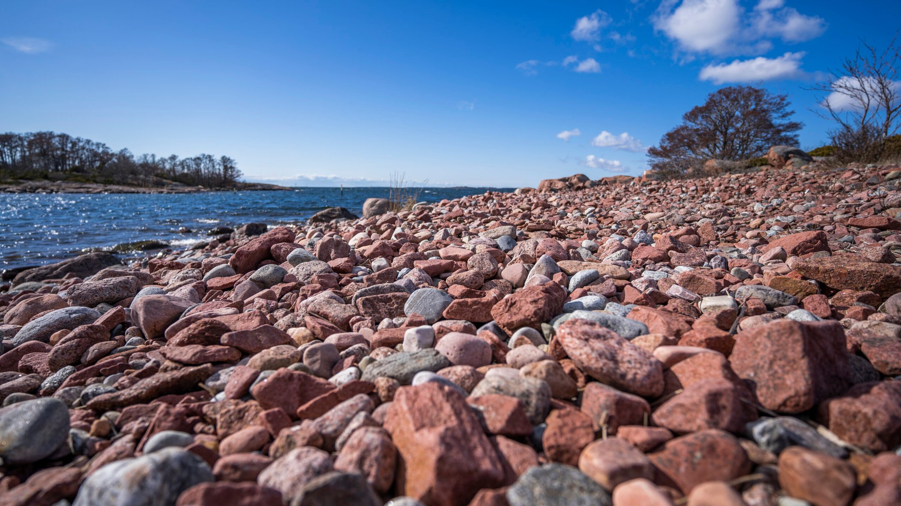
〇オーランドには合計53の自然保護区があり、そのうちの1つはアザラシの聖域であり、他の落葉樹林と松林、沼地と沼地、鳥の小島と砂利の島です。これらはすべて、自然の生息地と種の保護を目的としたEUの自然保護地域のネットワークであるNatura 2000の一部です。
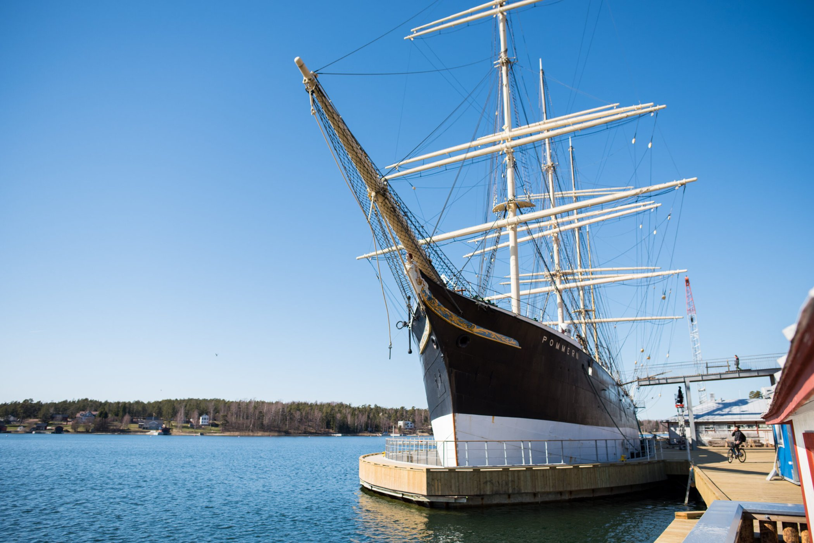
〇オーランド人は常に海路で旅をし、海を使って自分たちを支えてきました。海はまた、島の生活の条件を設定しています。バルト海の真ん中に位置するオーランド島は、常に船員と旅行者の両方にとって自然な待ち合わせ場所となっています。
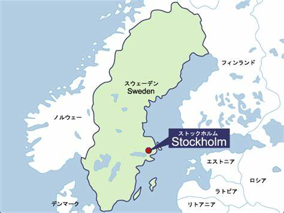
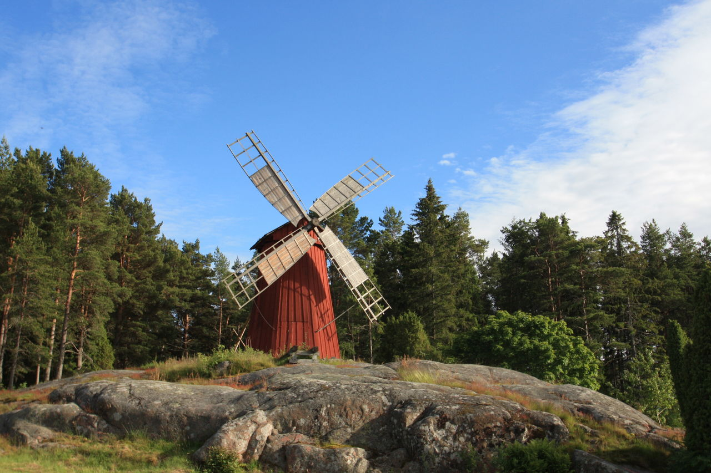
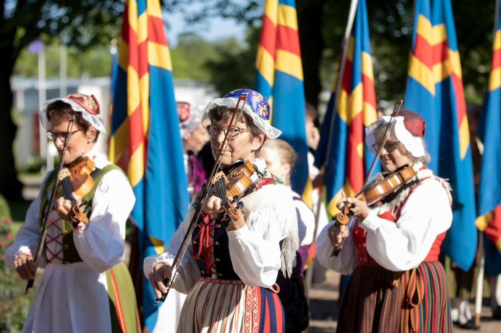
スウェーデン文化が多く根付いているオーランド諸島では、建物もスウェーデン風。
真ん中はオーランド諸島にある風車。
左は民族衣装：個人的にまたフィンランドよりスウェーデンの影響をよく受けているように見える。
右は行き方：日本からの直行便がないため、飛行機でフィンランドかスウェーデンまで行き、首都ストックホルムなどから船で行くのがベスト。
言語からもわかるが、オーランド諸島はやはり文化でもフィンランドの自治区でありながらスウェーデンの影響を受けているものが多くある。
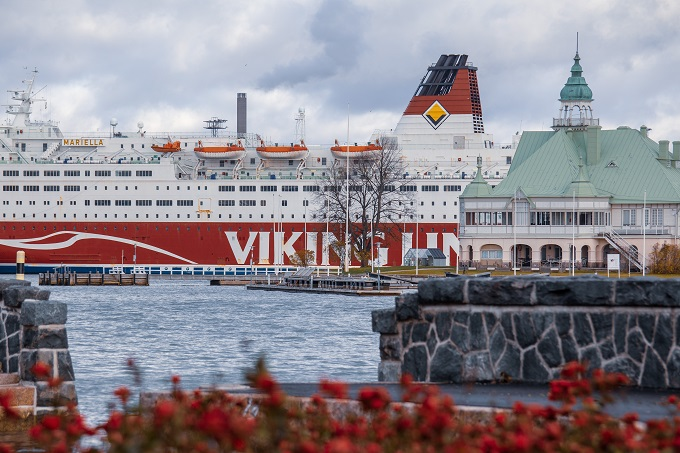
【祝】オーランド諸島は2022年6月9日に平和的自治100周年を迎えました。
そこで様々な祝賀パーティーを企画しました。
ここでは、
世紀のオーランド料理と称される「オーランド・パンケーキ」の振る舞いや、
パレードや多文化ファッションショー、展示会、クラフトマーケットをはじめ、
音楽、食事など、さまざまなイベントが催され、家族で楽しめる企画を主にし、
盛り上がりを見せました。
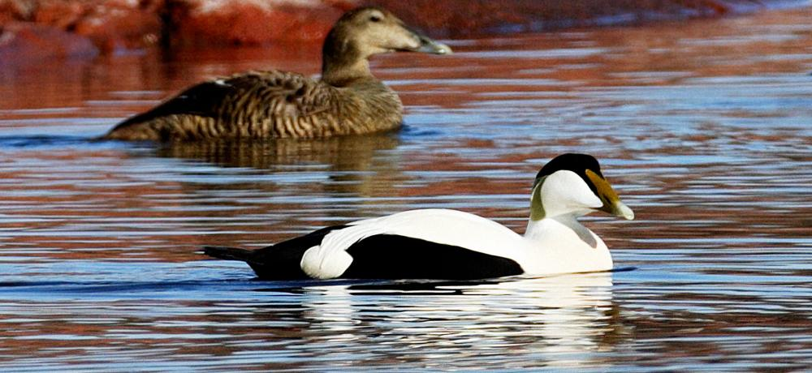
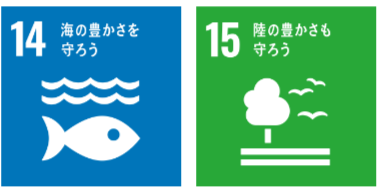
[14]海の豊かさを守ろう・[15]陸の豊かさも守ろう
積極的な自然保護活動を通じて、オーランドは将来の世代のために景観を保護しています。
また、自然保護区やNatura 2000エリアなど制定し、さまざまな種類の自然保護地域や、さまざまな種の保護を通じてこれを行っています。
具体的に、動物保護、自然保護、狩猟の禁止、水の管理など